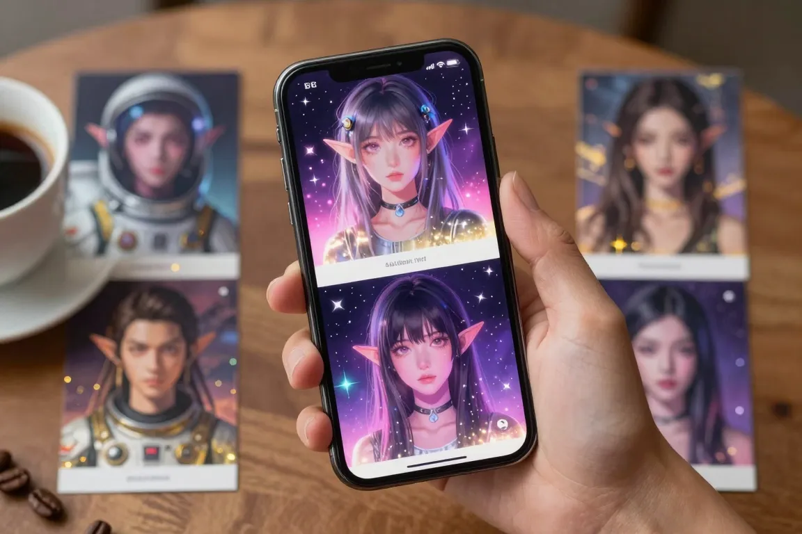

Набор из 20 стилизованных портретов одного лица во многих образах: фэнтези, аниме, космос и живопись. Телефонные приложения сделали форму распространённой в конце 2022 года.

Главная идея
Одно лицо, много костюмов: пакет превращает селфи в лист персонажа, а свечение служит наградой.
Принципы дизайна
Показывайте пакет как сетку 4×5 из 20 квадратных плиток по 160px с промежутком 6px.
Держите одно и то же лицо в каждой плитке и меняйте мир вокруг него: костюм, фон и цветокоррекцию.
Делайте глаза на 10–15% больше натуральных и сглаживайте кожу до эффекта аэрографа.
Ставьте за голову светящийся фон: радиальный градиент от #FFC857 до #2B1E5A.
Подписывайте каждый стиль под плиткой гротеском 12px, например «Фэнтези», «Аниме», «Космос».
Добавляйте под сеткой скруглённую кнопку «Сохранить пакет» высотой 48px розового цвета (#FF5FA2).
Показывайте пару «до и после»: простое селфи шириной 30% рядом с лучшим результатом шириной 70%.